Version control and RDM with DataLad
Adina Wagner
 @AdinaKrik
@AdinaKrik |
|
|
Psychoinformatics lab,
Institute of Neuroscience and Medicine, Brain & Behavior (INM-7) Research Center Jülich ReproNim/INCF fellow |
|
Slides: DOI 10.5281/zenodo.6364571 (Scan the QR code)
Live coding + hands-on
- Live-demonstration of DataLad examples and workflows
- Code along with copy-paste code snippets and hands-on exercises at handbook.datalad.org/r.html?dgpa
- Requirements:
- Most recent DataLad version for your OS (installation instructions at handbook.datalad.org)
- For containerized analyses: DataLad extension datalad-containers (available via pip) + Singularity or Docker

The same, but for data:
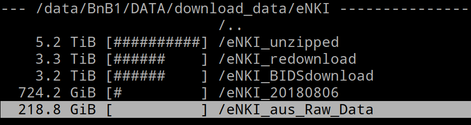(Yes, 13 TB of data. Yes, real-life example)
Help! Git to the rescue?
Sadly, Git does not handle large files well.
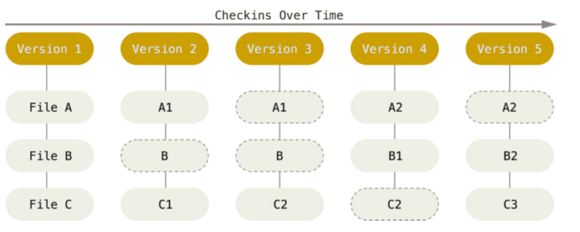
Help! Git to the rescue?
Sadly, Git does not handle large files well. 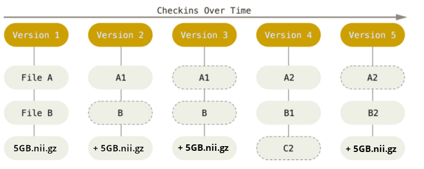
And repository hosting services refuse to handle large files: 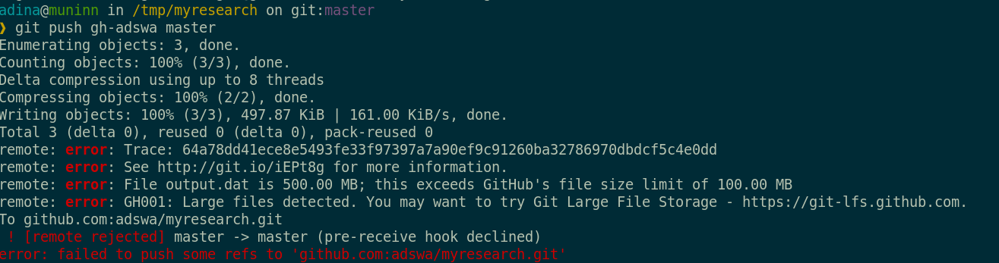
- A command-line tool, available for all major operating systems (Linux, macOS/OSX, Windows), MIT-licensed
- Build on top of Git and Git-annex
- Allows...
- ... version-controlling arbitrarily large content
- version control data and software alongside to code!
- ... transport mechanisms for sharing and obtaining data
- consume and collaborate on data (analyses) like software
- ... (computationally) reproducible data analysis
- Track and share provenance of all digital objects
- ... and much more
- Completely domain-agnostic
Examples of what DataLad can be used for:
- Publish or consume datasets via GitHub, GitLab, OSF, or similar services 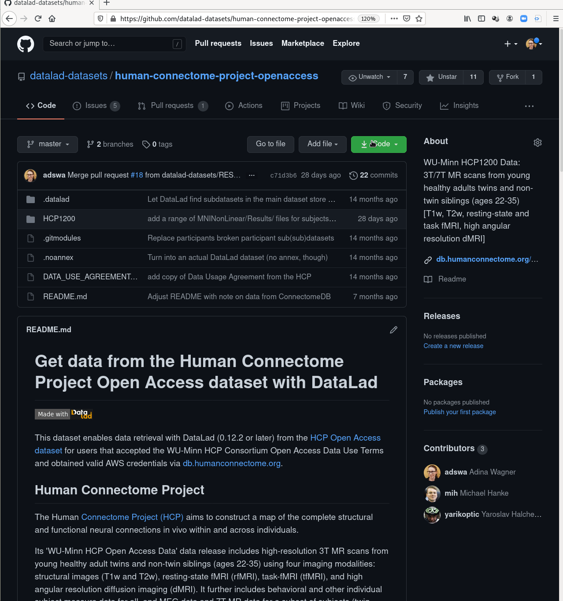
Examples of what DataLad can be used for:
- Behind-the-scenes infrastructure component for data transport and versioning (e.g., used by OpenNeuro, brainlife.io , the Canadian Open Neuroscience Platform (CONP), CBRAIN)

Examples of what DataLad can be used for:
- Creating and sharing reproducible, open science: Sharing data, software, code, and provenance 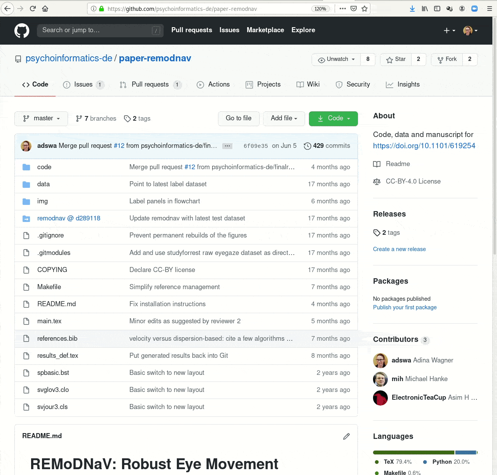
Examples of what DataLad can be used for:
- Creating and sharing reproducible, open science: Sharing data, software, code, and provenance 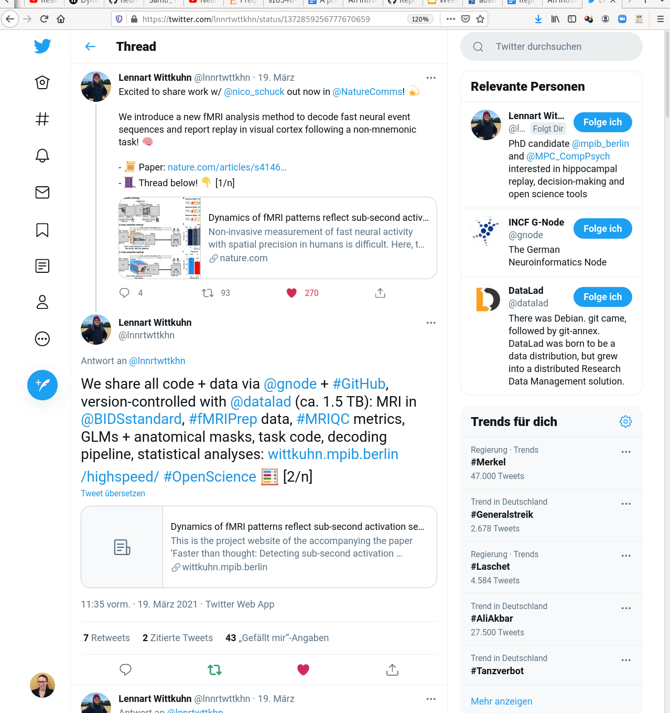
Examples of what DataLad can be used for:
- Central data management and archival system 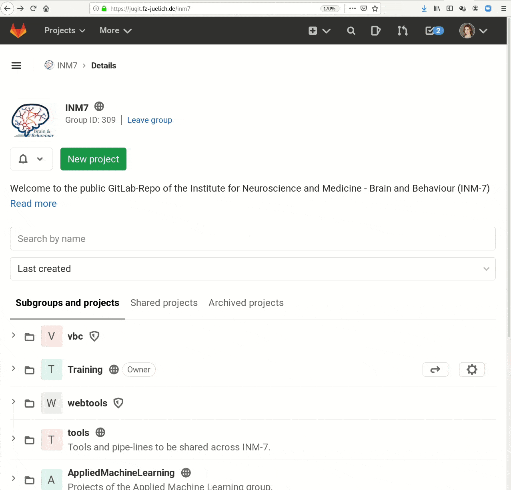
Prerequisites: Installation and Configuration
datalad --version
0.15.6$ git config --list
user.name=Adina Wagner
user.email=adina.wagner@t-online.de
[...]
Else, find installation and configuration
instructions at
handbook.datalad.org
Using DataLad
- DataLad can be used from the command line
- ... or with its Python API
- ... and other programming languages can use it via system call
datalad create mydatasetimport datalad.api as dl
dl.create(path="mydataset")# in R
> system("datalad create mydataset")
DataLad Datasets
- DataLad's core data structure
- Dataset = A directory managed by DataLad
- Any directory of your computer can be managed by DataLad.
- Datasets can be created (from scratch) or installed
- Datasets can be nested: linked subdirectories
DataLad Datasets
A DataLad dataset is a joined Git + git-annex repository
distributed version control for data
|
|

distributed version control for data

Version Control
- DataLad knows two things: Datasets and files


Local version control
Procedurally, version control is easy with DataLad!

Advice:
- Save meaningful units of change
- Attach helpful commit messages
Summary - Local version control
datalad createcreates an empty dataset.- Configurations (-c yoda, -c text2git) are useful (details soon).
- A dataset has a history to track files and their modifications.
- Explore it with Git (git log) or external tools (e.g., tig).
datalad saverecords the dataset or file state to the history.- Concise commit messages should summarize the change for future you and others.
datalad download-urlobtains web content and records its origin.- It even takes care of saving the change.
datalad statusreports the current state of the dataset.- A clean dataset status (no modifications, not untracked files) is good practice.
Plenty of data, but little disk-usage
- Cloned datasets are lean. "Meta data" (file names, availability) are present, but no file content:
$ datalad clone git@github.com:psychoinformatics-de/studyforrest-data-phase2.git
install(ok): /tmp/studyforrest-data-phase2 (dataset)
$ cd studyforrest-data-phase2 && du -sh
18M .$ datalad get sub-01/ses-movie/func/sub-01_ses-movie_task-movie_run-1_bold.nii.gz
get(ok): /tmp/studyforrest-data-phase2/sub-01/ses-movie/func/sub-01_ses-movie_task-movie_run-1_bold.nii.gz (file) [from mddatasrc...]# eNKI dataset (1.5TB, 34k files):
$ du -sh
1.5G .
# HCP dataset (80TB, 15 million files)
$ du -sh
48G .
Git versus Git-annex
- Data in datasets is either stored in Git or git-annex
- By default, everything is annexed, i.e., stored in a dataset annex by git-annex
Git versus Git-annex
Git and Git-annex handle files differently: annexed files are stored in an annex. File content is hashed & only content-identity is committed to Git.- Files stored in Git are modifiable, files stored in Git-annex are content-locked
- Annexed contents are not available right after cloning,
only content identity and availability information (as they are stored in Git).
Everything that is annexed needs to be retrieved with
datalad getfrom wherever it is stored.
|
|
Read this handbook chapter for details
Git versus Git-annex
-
Users can decide which files are annexed:
- Pre-made run-procedures, provided by DataLad (e.g.,
text2git,yoda) or created and shared by users (Tutorial) - Self-made configurations in
.gitattributes(e.g., based on file type, file/path name, size, ...; rules and examples ) - Per-command basis (e.g., via
datalad save --to-git)
Dataset nesting
- Typically, Git repositories are cumbersome to link to each other.
DataLad provides seamless nesting mechanisms:

- Modularizes research components for transparency, reuse, and access management
Dataset nesting
- Typically, Git repositories are cumbersome to link to each other. DataLad provides seamless nesting mechanisms: 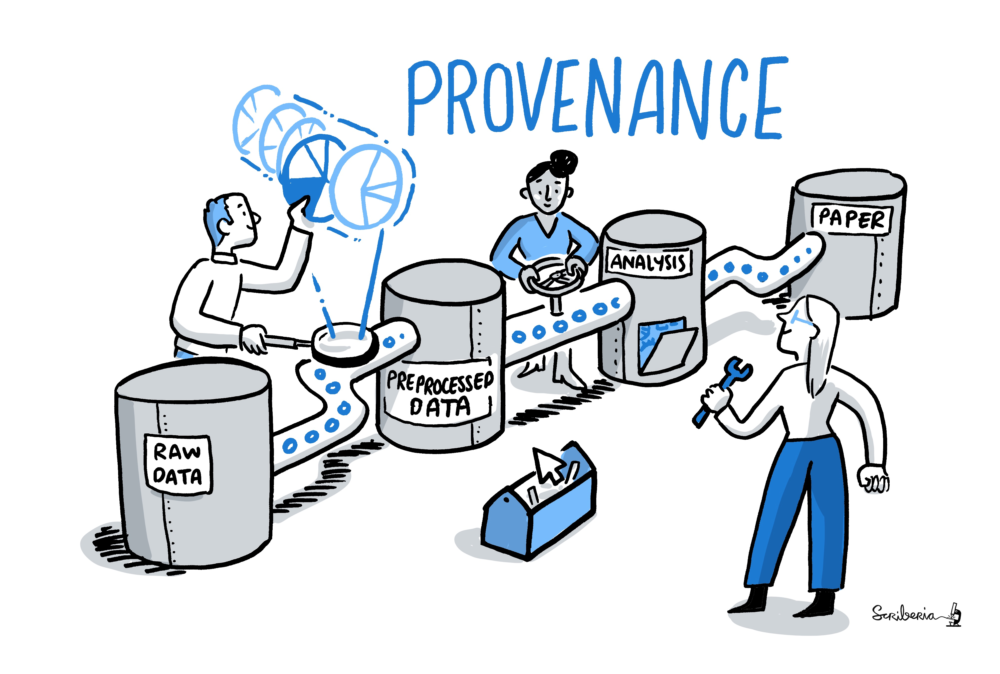
- Modularizes research components for transparency, reuse, and access management
- Overcomes scaling issues with large amounts of files
adina@bulk1 in /ds/hcp/super on git:master❱ datalad status --annex -r
15530572 annex'd files (77.9 TB recorded total size)
nothing to save, working tree cleanDataset nesting

DataLad: Dataset linkage
$ datalad clone --dataset . http://example.com/ds inputs/rawdata
$ git diff HEAD~1
diff --git a/.gitmodules b/.gitmodules
new file mode 100644
index 0000000..c3370ba
--- /dev/null
+++ b/.gitmodules
@@ -0,0 +1,3 @@
+[submodule "inputs/rawdata"]
+ path = inputs/rawdata
+ url = http://example.com/importantds
diff --git a/inputs/rawdata b/inputs/rawdata
new file mode 160000
index 0000000..fabf852
--- /dev/null
+++ b/inputs/rawdata
@@ -0,0 +1 @@
+Subproject commit fabf8521130a13986bd6493cb33a70e580ce8572
Summary - Dataset consumption & nesting
datalad cloneinstalls a dataset.- It can be installed “on its own”: Specify the source (url, path, ...) of the dataset, and an optional path for it to be installed to.
- Datasets can be installed as subdatasets within an existing dataset.
- The --dataset/-d option needs a path to the root of the superdataset.
- Only small files and metadata about file availability are present locally after an install.
- To retrieve actual file content of annexed files,
datalad getdownloads file content on demand. - Datasets preserve their history.
- The superdataset records only the version state of the subdataset.
reproducible data analysis
Your past self is the worst collaborator:
Basic organizational principles for datasets
- Keep everything clean and modular
 |
|
- do not touch/modify raw data: save any results/computations outside of input datasets
- Keep a superdataset self-contained: Scripts reference subdatasets or files with relative paths
Basic organizational principles for datasets
- Record where you got it from, where it is now, and what you do to it

- Document everything:
Reproducible execution & provenance capture
datalad run

Computationally reproducible execution & provenance capture
- Code may fail (to reproduce) if run with different software
- Datasets can store (and share) software environments (Docker or Singularity containers) and reproducibly execute code inside of the software container, capturing software as additional provenance
- DataLad extension:
datalad-container
datalad-containers run

Summary - Reproducible execution
datalad runrecords a command and its impact on the dataset.- All dataset modifications are saved - use it in a clean dataset.
- Data/directories specified as
--inputare retrieved prior to command execution. - Use one flag per input.
- Data/directories specified as
--outputwill be unlocked for modifications prior to a rerun of the command. - Its optional to specify, but helpful for recomputations.
datalad containers-runcan be used to capture the software environment as provenance.- Its ensures computations are ran in the desired software set up. Supports Docker and Singularity containers
datalad reruncan automatically re-execute run-records later.- They can be identified with any commit-ish (hash, tag, range, ...)
Interoperability
- DataLad is built to maximize interoperability and use with hosting and storage technology
Interoperability
- DataLad is built to maximize interoperability and use with hosting and storage technology
Publishing datasets
I have a dataset on my computer. How can I share it, or collaborate on it?General information: handbook.datalad.org/r.html?publish

-
Today:
Publishing a dataset to Gin
gin.g-node.org
Gin is a free repository hosting service.Step-by-Step: Webinterface
- Log into Gin
- Upload your SSH key 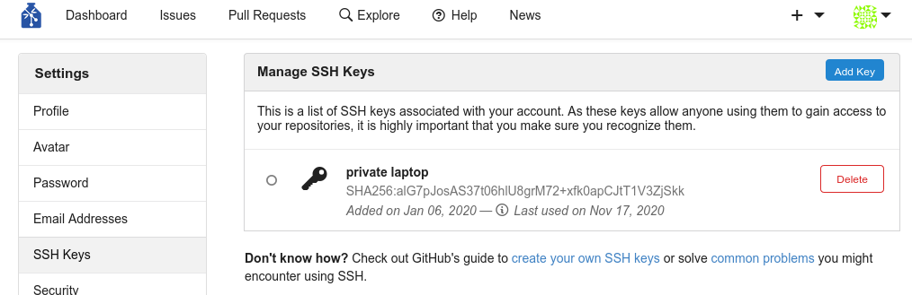
- Create a new repository 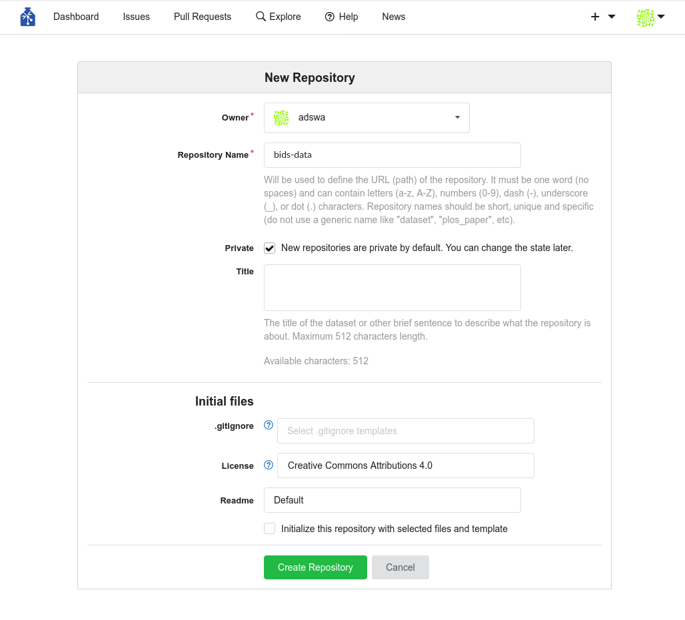
Step-by-Step: Command line
- Add the Gin repository 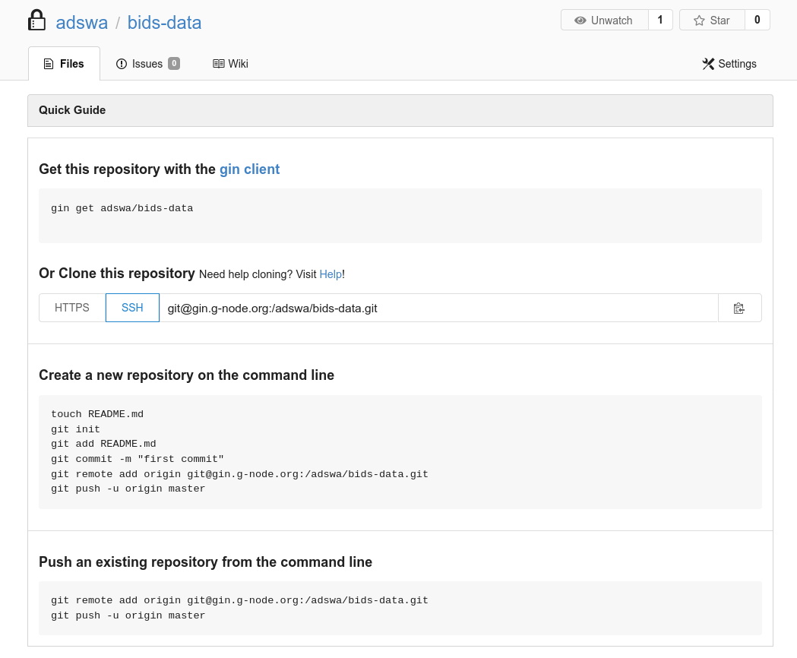
$ datalad siblings add -d . \
--name gin \
--url git@gin.g-node.org:/adswa/bids-data.git$ datalad push --to gin
-
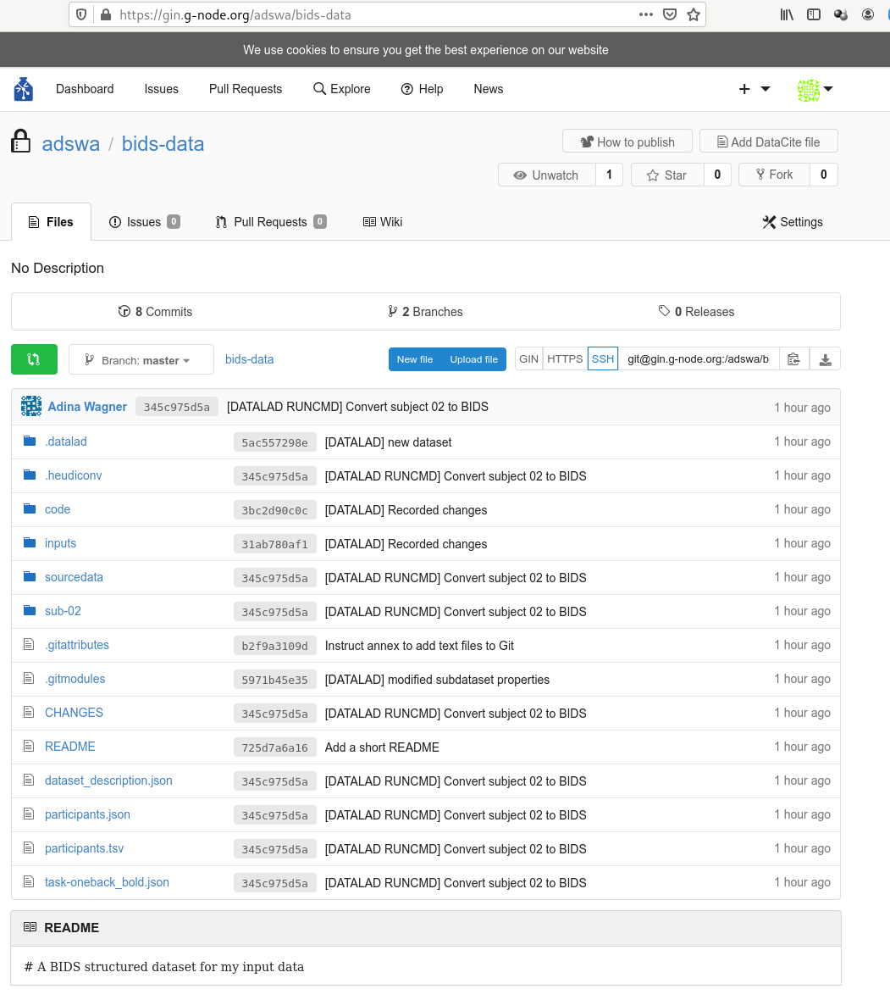
- Share it with your collaborators
$ datalad clone https://gin.g-node.org/adswa/bids-data
datalad rerun
-
datalad rerunis helpful to spare others and yourself the short- or long-term memory task, or the forensic skills to figure out how you performed an analysis - But it is also a digital and machine-readable provenance record
- Important: The better the run command is specified, the better the provenance record
- Note: run and rerun only create an entry in the history if the command execution leads to a change.
Why use DataLad?
- Mistakes are not forever anymore: Easy version control, regardless of file size
- Who needs short-term memory when you can have run-records?
- Disk-usage magic: Have access to more data than your hard drive has space
- Collaboration and updating mechanisms: Alice shares her data with Bob. Alice fixes a mistake and pushes the fix. Bob says "datalad update" and gets her changes. And vice-versa.
- Transparency: Shared datasets keep their history. No need to track down a former student, ask their project what was done.
Acknowledgements
|
Funders
Collaborators
|

Unlocking things
datalad run"unlocks" everything specified as--output- Outside of
datalad run, you can usedatalad unlock - This makes annex'ed files writeable:
$ ls -l myfile
lrwxrwxrwx 1 adina adina 108 Nov 17 07:08 myfile -> .git/annex/objects/22/Gw/MD5E-s7--f447b20a7fcbf53a5d5be013ea0b15af/MD5E-s7--f447b20a7fcbf53a5d5be013ea0b15af
# unlocking
$ datalad unlock myfile
unlock(ok): myfile (file)
$ ls -l myfile
-rw-r--r-- 1 adina adina 7 Nov 17 07:08 myfile # not a symlink anymore!
datalad save"locks" the file again
$ datalad save
add(ok): myfile (file)
action summary:
add (ok: 1)
save (notneeded: 1)
$ ls -l myfile
lrwxrwxrwx 1 adina adina 108 Nov 17 07:08 myfile -> .git/annex/objects/22/Gw/MD5E-s7--f447b20a7fcbf53a5d5be013ea0b15af/MD5E-s7--f447b20a7fcbf53a5d5be013ea0b15afSome tools (e.g., MatLab) don't like
symlinks. Unlocking or running matlab with "datalad run" helps!
Removing datasets
-
As mentioned before, annexed data is write-protected.
So when you try to
rm -rfa dataset, this happens:
$ rm -rf mydataset
rm: cannot remove 'mydataset/.git/annex/objects/70/GM/MD5E-s27246--8b7ea027f6db1cda7af496e97d4eb7c9.png/MD5E-s27246--8b7ea027f6db1cda7af496e97d4eb7c9.png': Permission denied
rm: cannot remove 'mydataset/.git/annex/objects/70/GM/MD5E-s35756--af496e97d4eb7c98b7ea027f6db1cda7.png/MD5E-s27246--af496e97d4eb7c98b7ea027f6db1cda7.png': Permission denied
[...]
$ chmod -R +w mydataset
$ rm -rf mydataset # success!
Removing datasets
datalad remove:
$ datalad remove -d ds001241
remove(ok): . (dataset)
action summary:
drop (notneeded: 1)
remove (ok: 1)
$ datalad remove -d mydataset
[WARNING] Running drop resulted in stderr output: git-annex: drop: 1 failed
[ERROR ] unsafe; Could only verify the existence of 0 out of 1 necessary copies; Rather than dropping this file, try using: git annex move; (Use --force to override this check, or adjust numcopies.) [drop(/tmp/mydataset/interdisciplinary.png)]
drop(error): interdisciplinary.png (file) [unsafe; Could only verify the existence of 0 out of 1 necessary copies; Rather than dropping this file, try using: git annex move; (Use --force to override this check, or adjust numcopies.)]
[WARNING] could not drop some content in /tmp/mydataset ['/tmp/mydataset/interdisciplinary.png'] [drop(/tmp/mydataset)]
drop(impossible): . (directory) [could not drop some content in /tmp/mydataset ['/tmp/mydataset/interdisciplinary.png']]
action summary:
drop (error: 1, impossible: 1)--nocheck to force removal:
$ datalad remove -d mydataset --nocheck 1 !
remove(ok): . (dataset)
Removing datasets
datalad remove will also error:
$ datalad remove -d myds
drop(ok): README.md (file) [locking gin...]
drop(ok): . (directory)
[ERROR ] to be uninstalled dataset Dataset(/tmp/myds) has present subdatasets, forgot --recursive? [remove(/tmp/myds)]
remove(error): . (dataset) [to be uninstalled dataset Dataset(/tmp/myds) has present subdatasets, forgot --recursive?]
action summary:
drop (ok: 3)
remove (error: 1)--recursive to remove all subdatasets, too:
$ datalad remove -d myds --recursive
uninstall(ok): input (dataset)
remove(ok): . (dataset)
action summary:
drop (notneeded: 2)
remove (ok: 1)
uninstall (ok: 1)